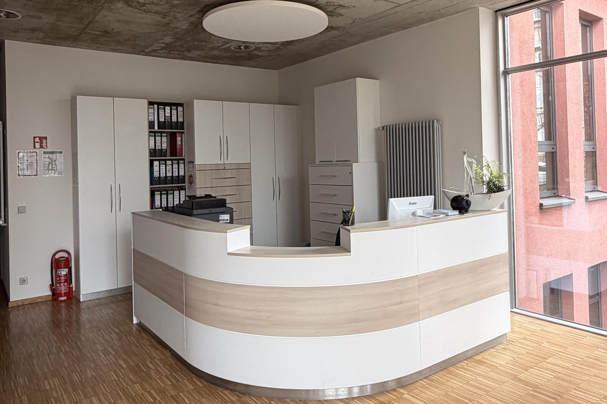
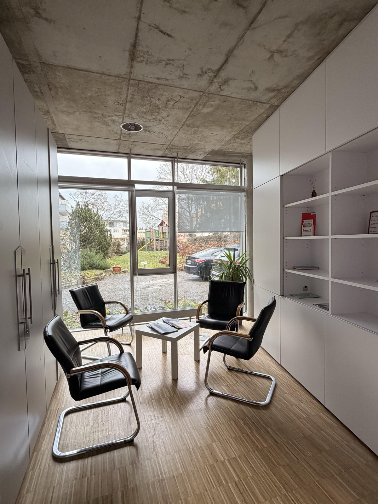

Fachärztin für Orthopädie und Unfallchirurgie · Spezielle Unfallchirurgie · D-Ärztin
Unfallchirurgie, Orthopädie, moderne Diagnostik und akute Notfälle – wir sind für Sie da. Mit fachlicher Kompetenz, moderner Ausstattung und einem engagierten Team: persönlich, zuverlässig und auf Augenhöhe.

Nach einem Arbeits- oder Wegeunfall ist der Besuch eines Durchgangsarztes erforderlich, wenn die Arbeitsunfähigkeit über den Unfalltag hinaus andauert. Gleiches gilt für Kinder nach Unfällen in Schule oder Kita – wir übernehmen Diagnose, Erstbehandlung und das gesamte Heilverfahren.
Erkrankungen und Beschwerden des Bewegungsapparates sind weit verbreitet und können die Lebensqualität erheblich einschränken. Mein Team und ich haben es uns zum Ziel gesetzt, Ihnen schnell und wirkungsvoll zu helfen.
Zunächst steht die Linderung akuter Schmerzen im Vordergrund.
Langfristig behandeln wir – sofern möglich – gezielt die Ursachen Ihrer Beschwerden.
Für nachhaltige und dauerhafte Behandlungserfolge.

Rasche Diagnose, fachgerechte Erstversorgung und Koordination des gesamten Heilverfahrens – in enger Zusammenarbeit mit spezialisierten Kliniken.
Behandlung akuter und chronischer Beschwerden des Bewegungsapparates – individuell und auf Augenhöhe.
Blockierungen gezielt manuell lösen – mit umfassender Zusatzqualifikation in Manueller Medizin.
Von der WHO bei chronischen Schmerzen empfohlen – fester Bestandteil unserer Schmerztherapie.
Minimalinvasive Schmerztherapie: Das Medikament wirkt gezielt direkt an der Ursache – ambulant und risikoarm.
Bei Arthrose und Knorpelschäden: Gelenkfunktion verbessern, Entzündungen hemmen, Schmerzen lindern.
Schnelle, präzise Diagnostik ganz ohne Strahlenbelastung – schonend, schmerzfrei und risikolos. Verfahren der ersten Wahl, auch bei kindlichen Hüfterkrankungen.
Moderne Röntgentechnologie mit deutlich geringerer Strahlenbelastung – feine Fissuren früh erkennen. Weiterführende MRT-Diagnostik über unsere Kooperationspartner.
Von der präzisen Diagnostik über die individuelle Beratung bis zur gezielten Behandlung – vereinbaren Sie jetzt Ihren Termin.